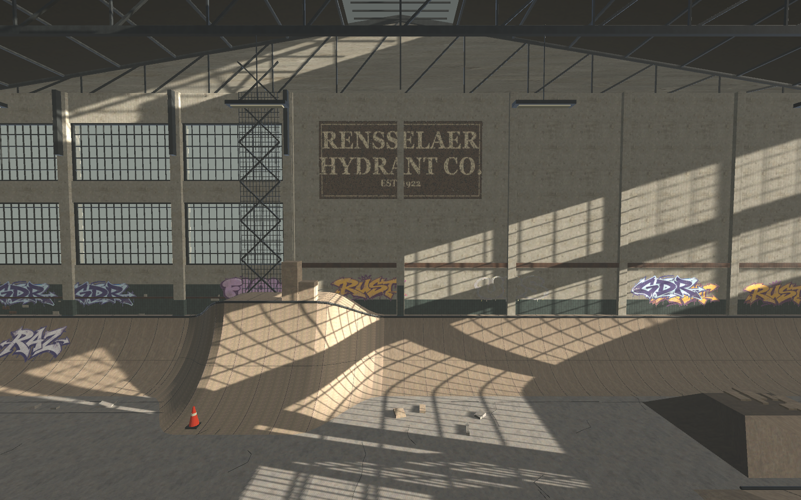
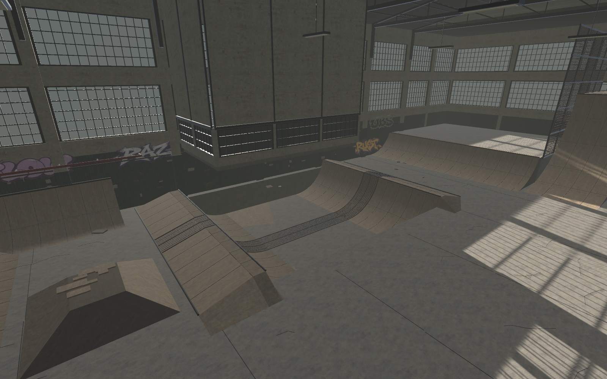
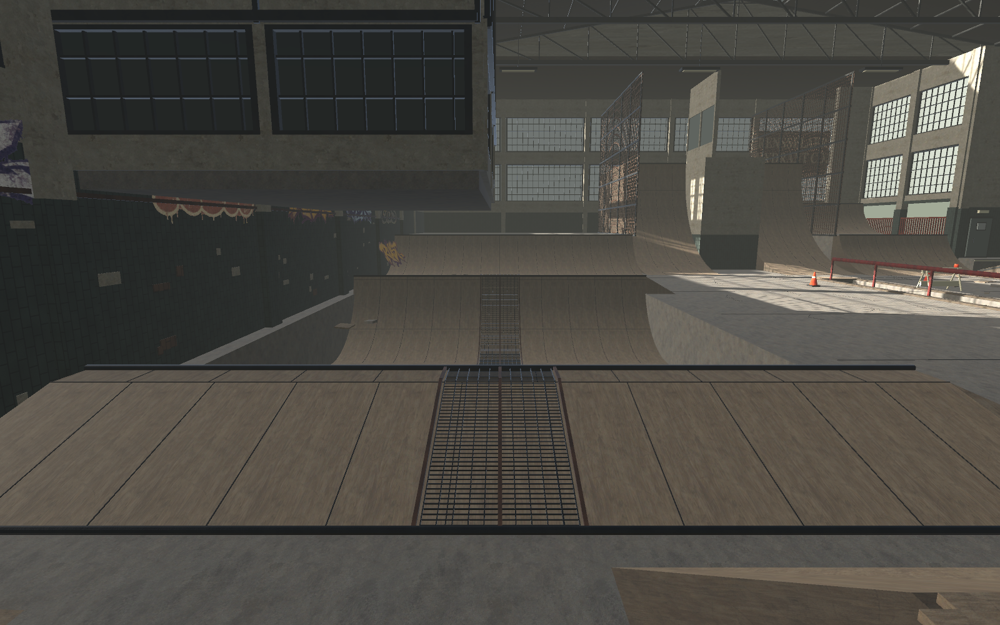
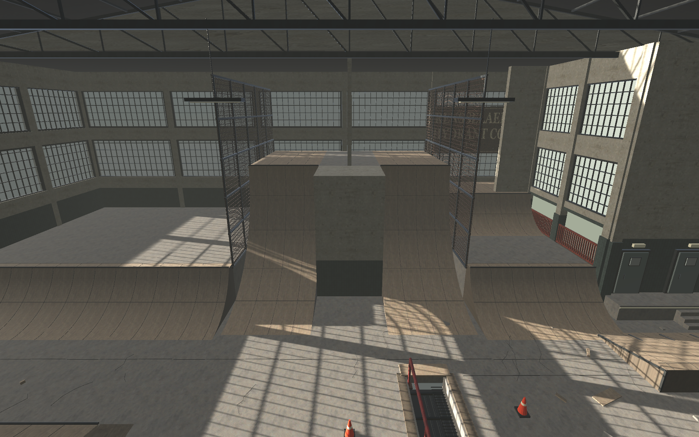
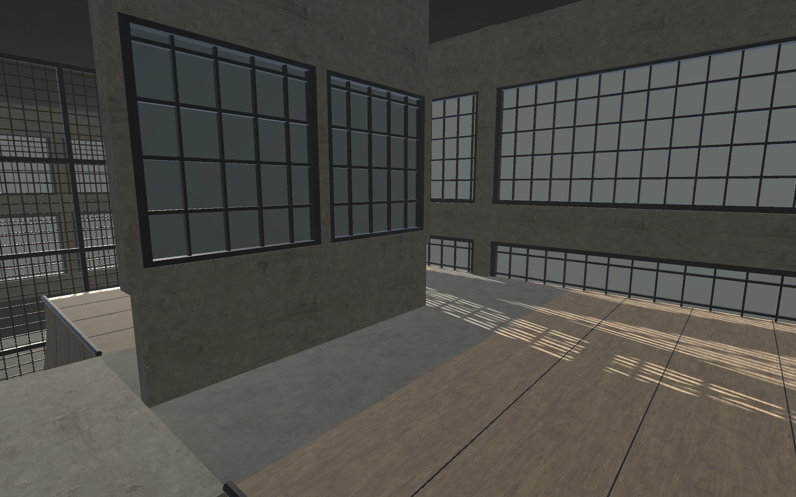
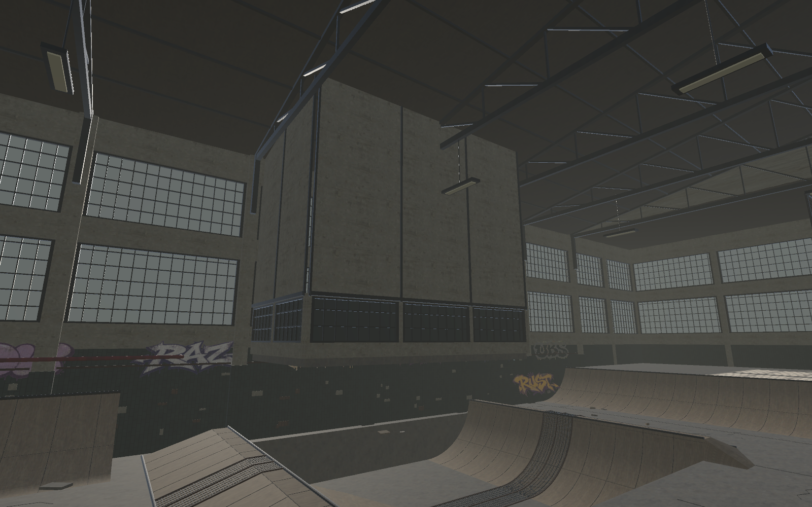

WAREHOUSE / STRUCTURAL REVIEW / V10
连续坡面、单层外坡与带窗的上层通道
按最新五张图及两条确认修正。细柱的中心指整面端墙；侧坡出口按“大坡中心线对齐、大小比例”调整，没有再次旋转整组设施。本页逐项列出参考、当前渲染及相同机位的修改前后。尺寸仍由截图估计，不能当作原游戏的测量数据。
1 · 整面端墙中心的细柱


保留整座大厅中线位置，宽度由 1.6 m 收至约 0.34 m。检查发现原改动会藏进实墙内，已将前脸移到墙面之前。标牌仍受细柱遮挡一条窄带，图案尚未重做。
2 · 中间无断口，外浅内深


| 关系 | V9 | V10 当前估值 |
|---|---|---|
| 大厅 / 坑底 | 0 / −1.2 m | 0 / −2.25 m |
| 外部到坡顶 | 升高 2.0 m | 升高 0.75 m，水平坡长 2.5 m |
| 内部爬升 | 3.2 m，左右分开 | 3.0 m，13.1 m 宽连续曲面 |
| 中央金属通道 | 比两侧低的独立槽 | 格栅宽约 1.6 m，与大坡同高起伏 |
| 侧面上坡 | 高而陡 | 较浅的侧接坡与坡顶带中线对齐 |

从通道中线看：中间格栅不再切出低缺口。两端外面仅小幅抬升，进入后是更深的内弧面。
展开：同一检查机位 V9 → V10

3 · 左边单层到墙，右边保留双层


两座高坡本身仍左右对应；外侧布局已改为不对称。删除左侧第二座后坡及外侧挡块，地台连续接到侧墙。两座高坡与外侧平台之间的铁网隔断已补回。
展开：相同机位修改前后

4 · 加长上层通道，并用窗墙挡住横向直视线



坡顶向后延伸长度从约 4.5 m 增至 8.7 m。中间窗墙从柱后延伸约 5.2 m，挡住两座高坡间的直接视线；窗墙后仍有约 3.5 m 深的平台将两侧连通。该深度为建模估值，不是从视频读取的绝对尺寸。
5 · 办公室更低、更大，顶部接屋顶

楼板顶面由约 5.1 m 降至 3.9 m，平面扩大到约 6.86 × 12 m。保留三面窗带，上部体量直接接到倾斜屋顶，取消旧版小盒子上方的空隙。
保存与核验
已保存并重新打开 WarehouseRecreation.unity，预制体和生成源同步更新。55 处曲面法线／碰撞采样与 204 处横跨左侧、金属中线、右侧的坡面支撑采样通过；侧接坡朝向、真实凹坑、窗墙阻挡、后方绕行、薄柱凸出、单层平台到墙和办公室楼板均通过检查。原门台、台阶、北端凸形平台及中央沟槽保留。
73 个网格、117670 个三角形、41 个静态碰撞体。保存场景使用木色基础材质，红蓝仅为参考渲染状态。
六个结构检查机位为 Camera 26…29、Camera 31_UpperPassage、Camera 32_OfficeRoofConnection。V9 完整备份在 Source~/BeforeConnectedRampAudit~。
本轮依据用户图示逐项修正结构，并用当前场景多角度渲染检查；没有重新完成所有视频帧的相机配准。旧版 1:32 锚点误差不适用于这个新布局，已停止生成该指标。不能据此声称与原视频逐像素一致。
仍待校准：精确场地比例、窗口与标牌美术、材质和光照；未验证滑板／Leap Motion 操控与完整路线连续滑行。